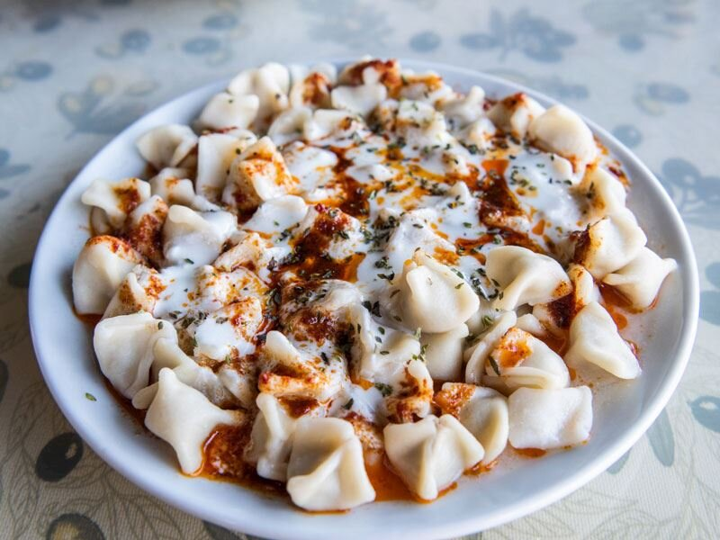

Manti

Description
Manti is a traditional and widespread boiled dumpling dish in Turkish cuisine. Traditionally it is served with a yoghurt sauce and red pepper or tomato sauce.
Ingredients
- Dough
- 500 g Plain Flour
- 2 pcs Egg
- 1 teaspoon Salt
- 400 ml Water
- 100 ml Olive oil
- Stuffing
- 250 g minced beef
- 1 pcs onion grated
- few stems fresh parsley chopped
- 1 teaspoon Salt
- A pinch Black pepper
- Yoghurt Sauce
- 500 ml yogurt
- 4 pcs garlic cloves finely chopped
- Red Sauce
- 3 tablespoons pepper paste
- 25 g Butter
- 1 teaspoon sumac ground
- 1 teaspoon chilli peppers flakes
Steps
- Put flour, water, egg and salt in a bowl to make a dough, then knead. Add olive oil and knead for a few minutes until you get nice elastic mass. Be sure to put enough olive oil so you can easily shape the dumplings later. Cover the dough with a cloth and leave to rest.
- In another bowl, mix the meat, parsley, onion and salt. Be sure to add pepper. Ideally, it should be ground just before.
- Divide the dough into two or three pieces so that it is easier to roll out. Roll out the dough to a thickness of 1-2 mm. Cut the dough into squares of approx. 4 cm. In my experience, this is a size that can be easily shaped. You can make them bigger or smaller. In fact, manti should be as small as possible.
- Put the stuffing on the dough and close them to make small pyramids. Fold the pastry with the filling in half, then fold the ends back towards the centre. This will give you a pyramid shape. Close the dough with your fingers.
- n a pot, bring water to boil. Place the manti in water, add salt, and cook for 10-12 minutes, until the dumplings float to the surface.
- Once done, remove them and set aside to cool.
- Prepare a white sauce by adding finely chopped garlic to the yoghurt.
- Now prepare the red sauce. In a frying pan, heat butter and add the pepper paste. You can also use tomato paste instead of pepper paste, but I prefer pepper paste. Add sumac, finely chopped mint and optionally chilli flakes.
- Place the dumplings on a plate and pour over your white and red sauce and then simply enjoy this fantastic dish.